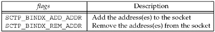

| [ Team LiB ] |
|
9.3 sctp_bindx FunctionAn SCTP server may wish to bind a subset of IP addresses associated with the host system. Traditionally, a TCP or UDP server can bind one or all addresses on a host, but they cannot bind a subset of addresses. The sctp_bindx function provides more flexibility by allowing an SCTP socket to bind a particular subset of addresses.
The sockfd is a socket descriptor returned by the socket function. The second argument, addrs, is a pointer to a packed list of addresses. Each socket address structure is placed in the buffer immediately following the preceding socket address structure, with no intervening padding. See Figure 9.4 for an example. The number of addresses being passed to sctp_bindx is specified by the addrcnt parameter. The flags parameter directs the sctp_bindx call to perform one of the two actions shown in Figure 9.3. Figure 9.3. flags used with sctp_bindx function. The sctp_bindx call can be used on a bound or unbound socket. For an unbound socket, a call to sctp_bindx will bind the given set of addresses to the socket descriptor. If sctp_bindx is used on a bound socket, the call can be used with SCTP_BINDX_ADD_ADDR to associate additional addresses with the socket descriptor or with SCTP_BINDX_REM_ADDR to remove a list of addresses associated with the socket descriptor. If sctp_bindx is performed on a listening socket, future associations will use the new address configuration; the change does not affect any existing associations. The two flags passed to sctp_bindx are mutually exclusive; if both are given, sctp_bindx will fail, returning the error code EINVAL. The port number in all the socket address structures must be the same and must match any port number that is already bound; if it doesn't, then sctp_bindx will fail, returning the error code EINVAL. If an endpoint supports the dynamic address feature, a call to sctp_bindx with the SCTP_BINDX_REM_ADDR or SCTP_BINDX_ADD_ADDR flag will cause the endpoint to send an appropriate message to the peer to change the peer's address lists. Since adding and removing addresses from a connected association is optional functionality, implementations that do not support this functionality will return EOPNOTSUPP. Note that both ends of an association must support this feature for proper operation. This feature can be useful if the system supports dynamic provisioning of interfaces; for example, if a new Ethernet interface is brought up, the application can use SCTP_BINDX_ADD_ADDR to start using the additional interface on an existing connection. |
| [ Team LiB ] |
|